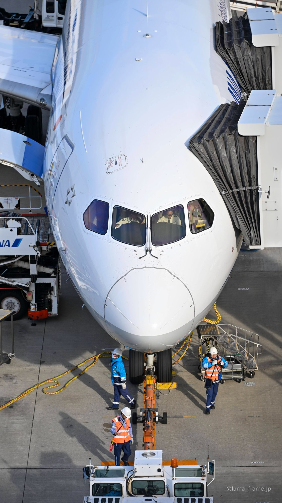
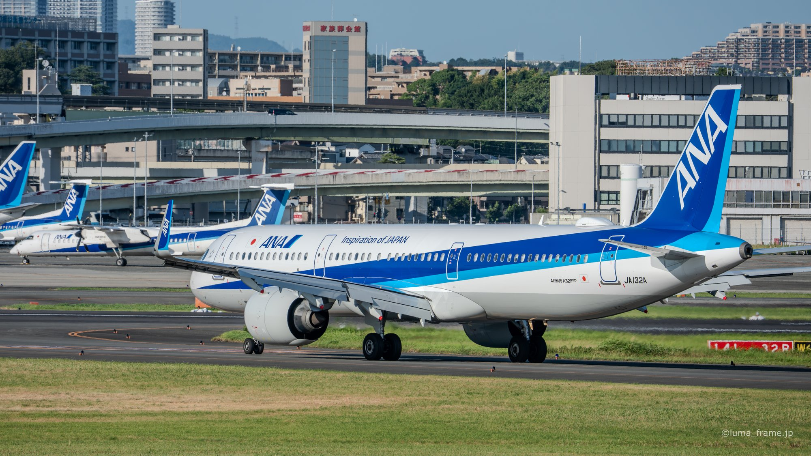
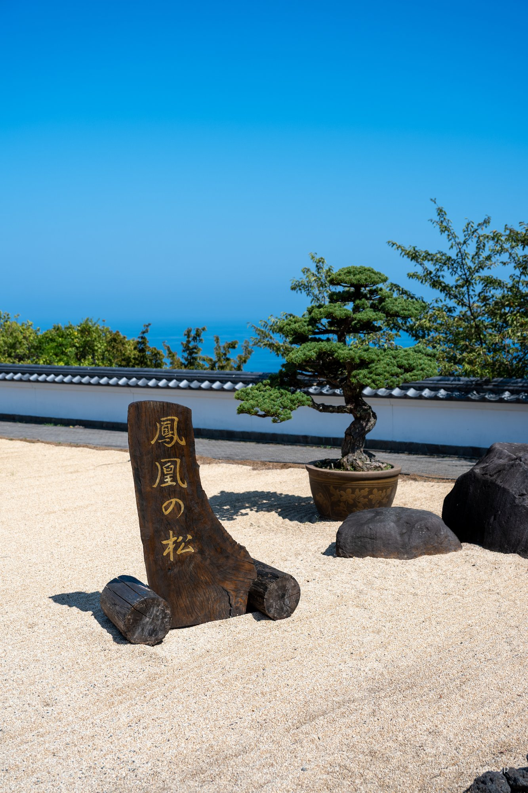
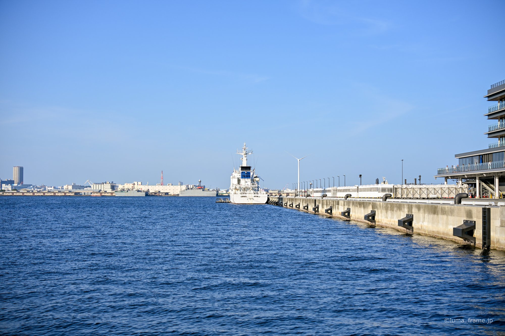

京浜島つばさ公園で撮る。レンズ1本、ISO100のまま82分
東京都大田区の京浜島つばさ公園で、着陸機が頭上を通過するまでの82分間。NIKKOR Z 70-180mm f/2.8 の1本だけ、ISO100 のまま撮った17枚。撮影の時刻…
読む →

羽田の夜は、シャッターを開けるほど空港に見えなくなる
羽田空港の展望デッキで撮った夜の写真22点。13秒の長秒露光から1/30秒の手持ちまで、同じ空港がシャッタースピードでどこまで変わるか。撮影の時刻と設定は本文に添えています。…
読む →

冬の羽田に3回通う。空気が澄む季節の展望デッキ
2025年12月31日、2026年2月14日、2月23日。冬から早春の羽田空港展望デッキで撮った27点。3回とも ISO100 のまま、70-180mm の1本で撮り切った記録…
読む →

ISO100 が3200になるまで。伊丹スカイパークの2時間40分
2026年8月10日、伊丹スカイパークで17時03分から19時44分まで。ISO100 の1/1250秒で始まり、3秒の露光で終わるまでの33点。撮影の時刻と設定は本文に添えて…
読む →

日が落ちると、海から江ノ電に被写体が入れ替わる
片瀬海岸から江の島、そして江ノ電の沿線へ。3日ぶんの湘南で撮った30点を、17時から21時までの時系列と撮影の時刻と設定は本文に添えています。…
読む →

午後3時間で、屋外の庭園から屋内の邸宅へ
2025年8月31日、熱海の AKAO Forest と起雲閣を1つの午後で回った25点。ISO100 から640へ、1/8000秒から1/15秒へ。屋外と屋内で何が変わるか。…
読む →

望遠と広角、2本で港を撮り分ける
2025年8月17日の横浜で、50-400mm と 35mm f/1.4 を持ち替えながら撮った21点。港を切り取るときと街ごと入れるときで、何が変わるか。撮影の時刻と設定は本…
読む →